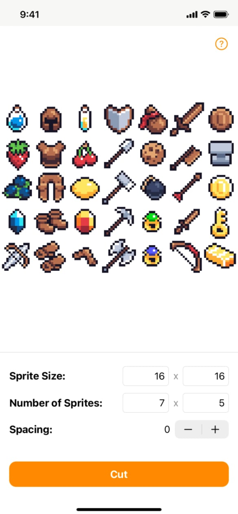

Sprite Cutter
Extract Spritesheet Images
Sprite Cutter allows you to quickly cut spritesheets into separate sprite PNG images. It is simple and even works with spritesheets that have spacing between sprites.
iOS, iPadOS, macOS, visionOS


Extract Spritesheet Images
Sprite Cutter allows you to quickly cut spritesheets into separate sprite PNG images. It is simple and even works with spritesheets that have spacing between sprites.
iOS, iPadOS, macOS, visionOS

Slicing
Spritesheets into PNGs, spacing and all.